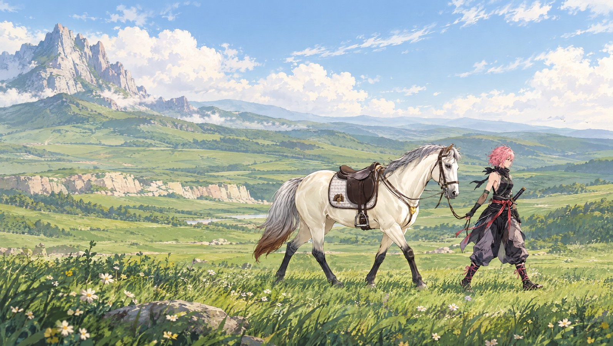

Preparing your journey…
01 / THE MEADOW
The way
home.
A rider. A dragon. A bond that brings her back.
SCROLL TO BEGIN

01 / THE MEADOW
A rider. A dragon. A bond that brings her back.
SCROLL TO BEGIN